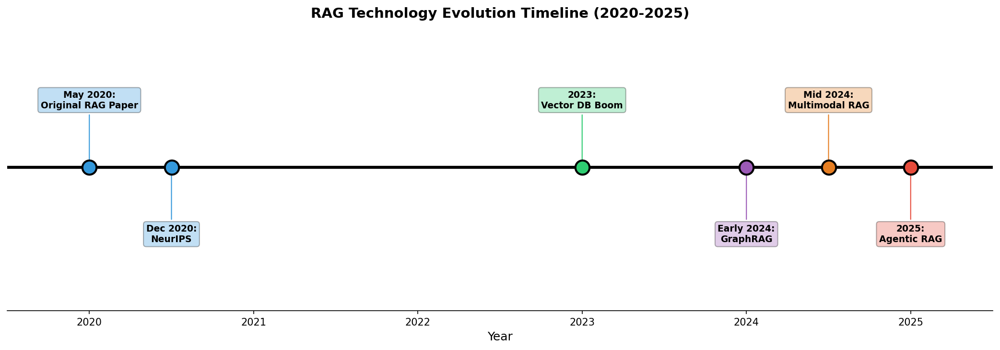
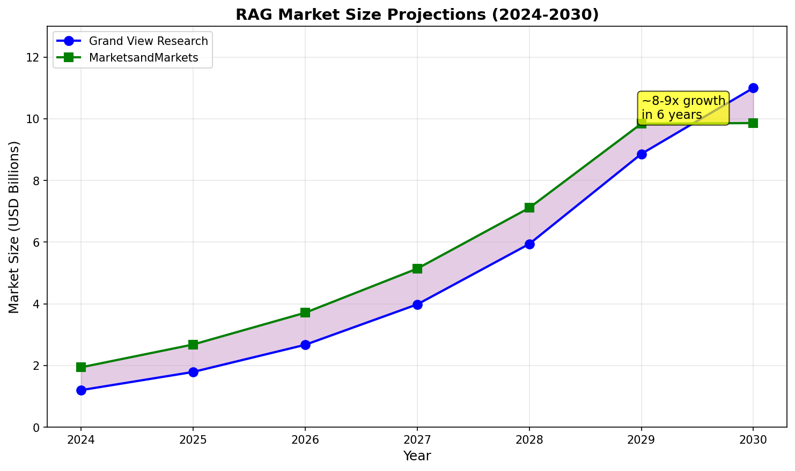
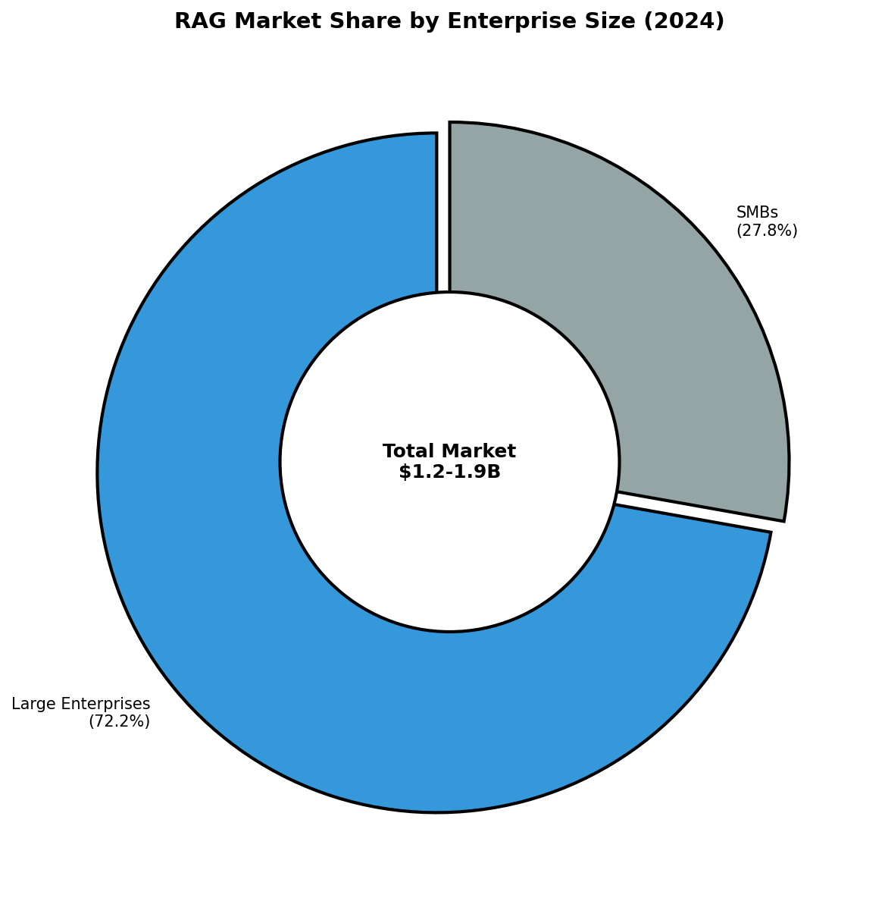
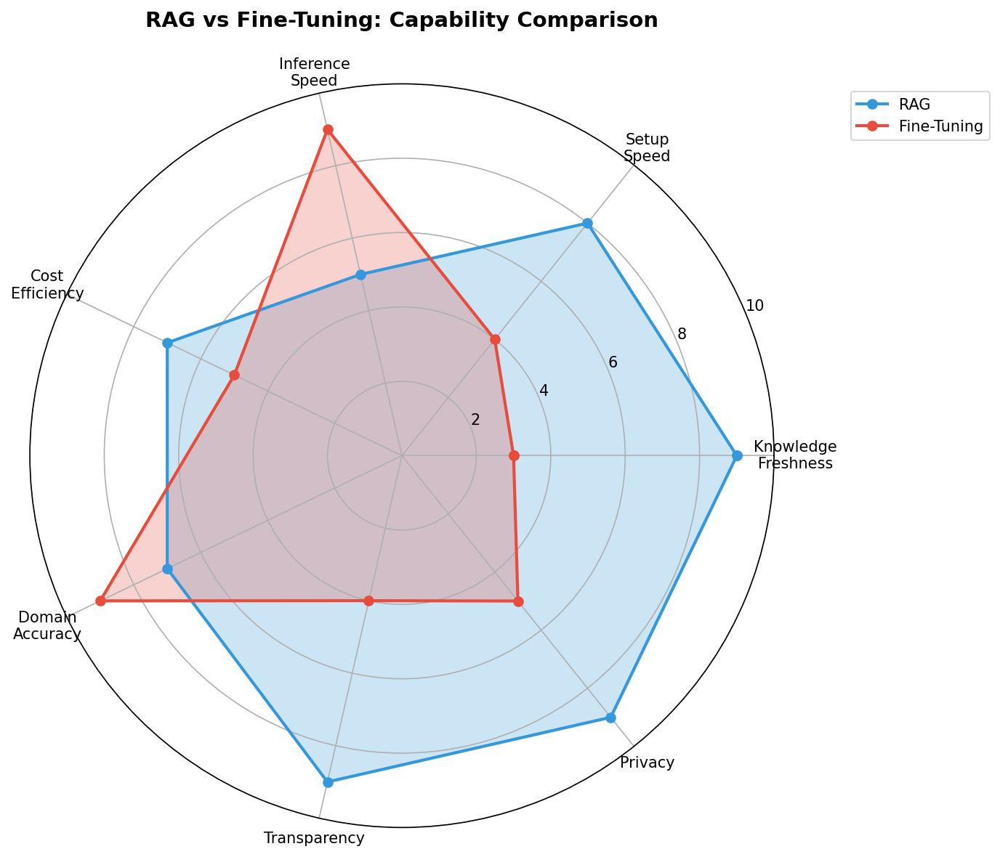
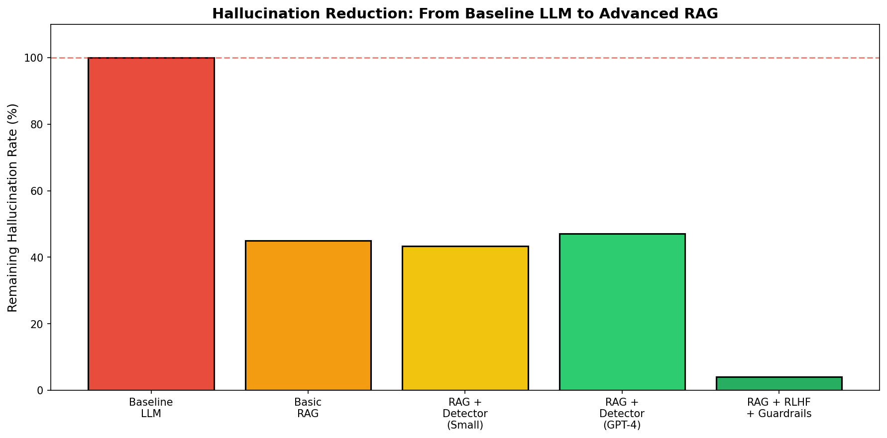

1. What is RAG? — Core Definition
RAG is a hybrid framework that augments LLM responses by retrieving relevant information from external knowledge sources at query time 129.

RAG Technology Evolution Timeline (2020-2025)
How RAG Works:
- Indexing Phase (Build Time)
- Documents are preprocessed and chunked
- Chunks are converted to vector embeddings
- Embeddings are stored in a vector database
- Query Phase (Runtime)
- User query is converted to a vector embedding
- Similar vectors are retrieved from the database
- Retrieved context is combined with the query
- LLM generates a response grounded in the retrieved content
RAG combines two types of memory:
- Parametric Memory: Knowledge encoded in LLM weights during training
- Non-Parametric Memory: External knowledge retrieved at query time
2. Historical Context
RAG was first introduced in a research paper titled "Retrieval-Augmented Generation for Knowledge-Intensive NLP Tasks," submitted to arXiv on May 22, 2020 12.
| Date | Event |
|---|
| May 2020 | Original RAG paper (Meta AI/UCL/NYU) |
| Dec 2020 | Presented at NeurIPS 2020 |
| 2023 | Vector database boom; enterprise adoption begins |
| Early 2024 | Microsoft releases GraphRAG |
| Mid 2024 | Multimodal RAG emerges |
| 2025 | Agentic RAG becomes mainstream |
3. Market Size and Growth

RAG Market Size Projections (2024-2030)
| Analyst Firm | 2024 Value | 2030 Projection | CAGR |
|---|
| Grand View Research | $1.2B | $11.0B | 49.1% |
| MarketsandMarkets | $1.94B | $9.86B | 38.4% |

RAG Market Share by Enterprise Size (2024)
4. RAG Architecture Components
| Component | Function | Common Options |
|---|
| Document Store | Stores source documents | S3, databases, file systems |
| Embedding Model | Converts text to vectors | OpenAI ada-002, Cohere, sentence-transformers |
| Vector Database | Stores/retrieves embeddings | Pinecone, Milvus, Weaviate, Chroma, FAISS |
| Retrieval Engine | Finds relevant documents | Similarity search, hybrid search |
| LLM | Generates responses | GPT-4, Claude, Llama, Mistral |
| Orchestrator | Manages the pipeline | LangChain, LlamaIndex |
5. RAG vs. Fine-Tuning

RAG vs Fine-Tuning: Capability Comparison
| Dimension | RAG | Fine-Tuning |
|---|
| Knowledge Updates | Real-time, no retraining | Requires retraining |
| Inference Speed | Slower (retrieval latency) | Faster (self-contained) |
| Data Privacy | Data stays in database | Data embedded in weights |
| Transparency | Provides source citations | Black box |
| Domain Adaptation | Limited style control | Deep customization |
| Cost | Lower upfront, higher runtime | Higher upfront, lower runtime |
Consensus: Hybrid approaches combining fine-tuning with RAG often yield best results
1314.
6. Hallucination Reduction

Hallucination Reduction: From Baseline LLM to Advanced RAG
| Configuration | Hallucination Reduction |
|---|
| Basic RAG vs Baseline LLM | 42-68% |
| RAG + Detector (Llama-2/Mistral) | 56.6% |
| RAG + Detector (GPT-4) | 52.9% |
| RAG + RLHF + Guardrails | 96% |
Critical Caveat: Even with RAG, legal AI tools showed only 42-65% accuracy, with substantial hallucinations remaining
6. One researcher notes: "Too much marketing cool-aid has been spent on stating that RAG avoids or reduces hallucinations. This is not true at all"
15.
7. Chunking Strategies
Recommended Best Practices:
- Chunk Size: 400-512 tokens as baseline
- Overlap: 10-20% between chunks
- Strategy: Start with RecursiveCharacterTextSplitter, upgrade to semantic chunking if needed
| Chunking Method | Best For |
|---|
| Fixed-size | General use, fast, cheap |
| Semantic | Complex documents, varied structure |
| Page-level | Consistent document types (NVIDIA: 0.648 accuracy) |
| ClusterSemantic | Highest precision in Chroma benchmarks |
Wrong chunking strategy creates up to
9% gap in recall performance
18.
8. RAG Evolution: GraphRAG, Agentic RAG, Multimodal RAG
GraphRAG (Microsoft, 2024) 1920:
- Uses knowledge graphs instead of vector similarity
- Excels at multi-hop reasoning and holistic queries
- Handles aggregation queries that baseline RAG fails at
Agentic RAG (2025) 21:
- Embeds autonomous agents with planning and reflection
- Dynamically manages retrieval strategies
- Single-agent, multi-agent, and hierarchical architectures
- Evidence suggests 33% of enterprise software will include agentic AI by 2028
Multimodal RAG 2223:
- Extends RAG to images, audio, video, tables
- Three approaches: unified embedding, modality grounding, separate stores + reranker
- Survey paper accepted for ACL 2025 Findings
9. Real-World Use Cases
| Company | Use Case | Result |
|---|
| LinkedIn | Customer support with knowledge graph RAG | 28.6% faster resolution |
| DoorDash | Delivery support chatbot with RAG + guardrails | Improved accuracy |
| Siemens | Internal knowledge management | Cross-document search |
| Shopify (Sidekick) | E-commerce support chatbot | Real-time product data |
| Royal Bank of Canada | Banking compliance assistant | Multi-format document retrieval |
10. Criticisms and Limitations
Production Failure Rate: One report indicates up to 70% of RAG systems fail in production
8.
Seven Failure Points (arXiv paper, 2024) 25:
- Missing content in knowledge base
- Missed top-ranked documents
- Not in context (relevant docs not retrieved)
- Not extracted (relevant info not used)
- Wrong format
- Incorrect specificity
- Incomplete responses
Long-Context LLMs Challenge 2627:
- Long-context LLMs (1M+ tokens) can outperform RAG in some benchmarks
- RAG remains advantageous for: dynamic data, cost efficiency, precise retrieval
- Hybrid approaches (Self-Route, CAG) emerging